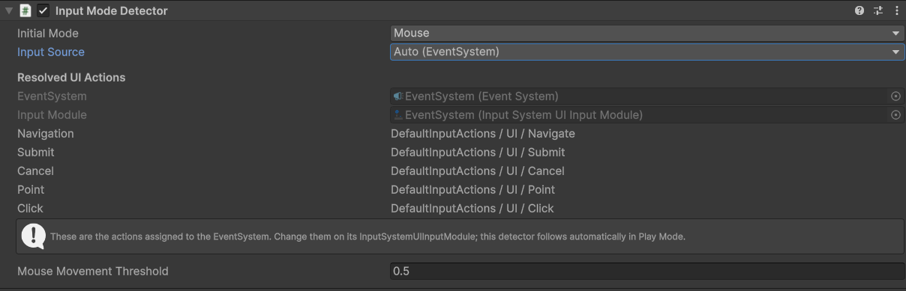

Default focus and recovery
Choose the initial control and recover automatically when the current selection becomes invalid, disabled, inactive, or non-interactable.
Reliable Focus. Smarter Navigation.
Keep your existing Unity uGUI menus and add reliable controller, keyboard, mouse, and touch focus behavior.

Smart UI Focus & Navigation works with standard uGUI Selectables, Unity's EventSystem, and the Input System. It adds focused reliability and navigation components without replacing the UI framework.
Choose the initial control and recover automatically when the current selection becomes invalid, disabled, inactive, or non-interactable.
Restore the last valid selection independently for each menu or focus scope.
Return focus to the exact valid control that opened a modal or popup.
Generate deterministic links for freeform, vertical, horizontal, complete-grid, and ragged-grid layouts.
Keep the generated target with Auto, block a direction with None, or choose a specific Selectable with Explicit.
Refresh links after controls are added, removed, reordered, enabled, disabled, or moved by layout changes.
Expose current Mouse, Keyboard, or Gamepad mode and receive a callback when the active mode changes.
Keep uGUI transitions, Input Actions, EventSystem navigation, and existing UI structure.
Watch the complete workflow, from reliable focus handling to directional navigation and dynamic UI updates.
Each focus scope can define a default and remember its last valid control. If the current EventSystem selection becomes invalid, disabled, inactive, or non-interactable, focus can recover to a usable target.
Push a popup scope when it opens and pop it when it closes. The prior valid selection is restored without replacing Unity's EventSystem.
Runtime-added, removed, reordered, disabled, and reflowed controls can refresh their explicit links after Unity's layout system updates.
Use an active EventSystem with InputSystemUIInputModule. Input mode detection exposes Mouse, Keyboard, and Gamepad activity, while standard pointer actions support mouse and touch workflows.


Compatible with Unity 2022.3 LTS and Unity 6. Validated with Built-in, URP, and HDRP.
Compatible with Unity 2022.3 LTS and Unity 6.
Validated with:
UI Toolkit is not currently supported.
Windows · macOS · Linux · iOS · Android · WebGL
Keyboard · Gamepad / controller · Mouse · Touch
Validated on Windows x64 and Android IL2CPP ARM64, including real-device Android touch input.
Read the complete installation, workflow, API, and troubleshooting guides online, or contact LevelArgento directly at support@levelargento.com.